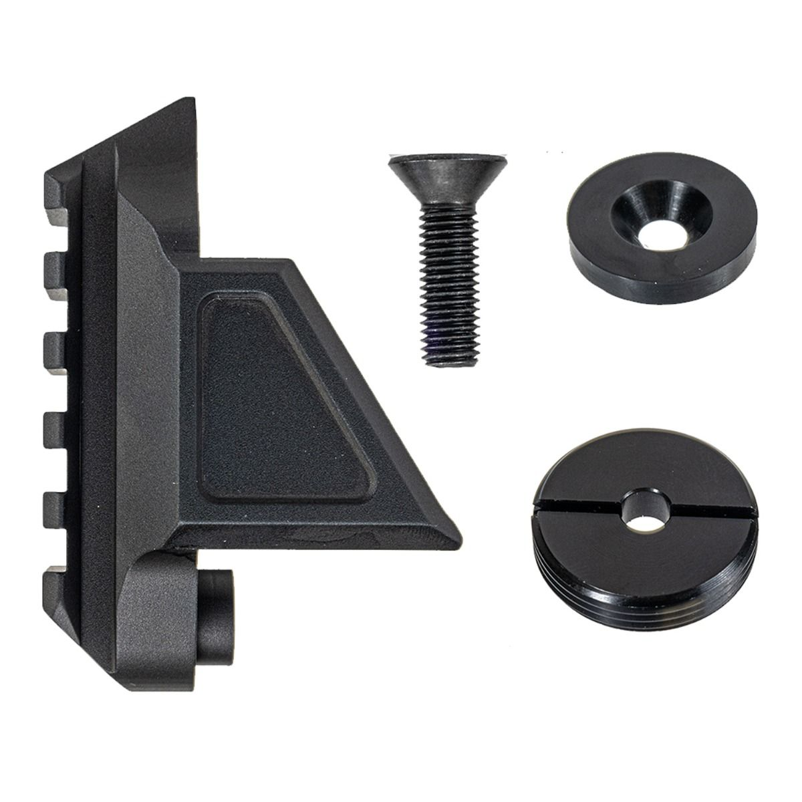
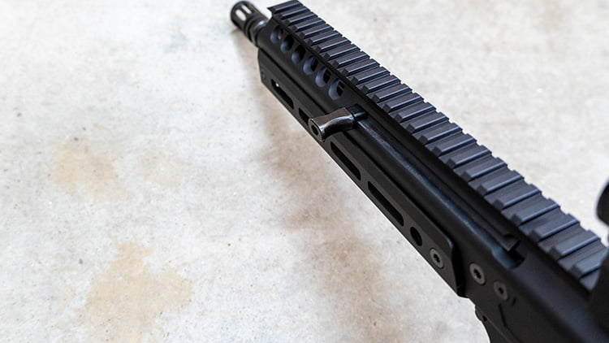

The JAKL is a new type of fire arm made by PSA Palmeto State Armory that uses a monolithic upper.
This means that all of the operating system is contained inside the uper reciver.
With type of system you dont need an external buffer or buffer tube and this allows you to shorten the length of the gun.
This also allows you to run the gun with a folding stock.
You can have the stock folded and the gun will still operate because of its monolithic upper and long stroke piston operating system.
The upper can combined with any standered mil-spec AR-15 Lower Reciver.
All you need to do is add on the Jakl adapters to make it work with the upper.
All this piece does is keep the operating system contained inside the upper while the gun is cycling.
This is why it dosent matter if you have your stock folded or locked in place while you are running the gun.


This is a picture of the PSA Stock adapter.
This piece can be put on any standered lower reciver in minutes.
With this the manule of arms is very similar to a standared Ar-15.
The only other main difference from a standered Ar-15 is the charging handle.
The charging handle on the Jakl can be placed on either side of the weapon and is located further towards the muzzle.
Above is 3 detalied videos on the Palmeto State Armory Jakl
You can find more information at PSA .
Contact Us